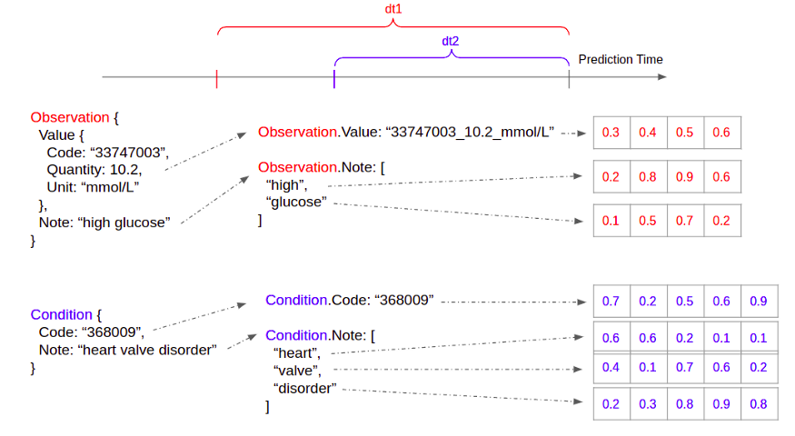

4 Healthcare
TOC
- Misc
- Terms
- Processing
- Fairness and Privacy
Misc
- Notes from - Paper: Scalable and accurate deep learning with electronic health records by Google AI’s team - How to Encode Medical Records for Deep Learning - Makes data suitable for a RNN (see Processing for details)
- Also see - Geospatial, Analysis >> Disease Mapping
- Bias in Healthcare Claims Data (article, (mini) paper) - Imbalance of patients or members represented in large healthcare datasets can make your results non-generalizable or (in some cases) flat out invalid.
- Goals should be: investigate the biases, mitigate as well as possible, and decide which insights are still valuable or meaningful despite these nuances
- Characteristics of data that lead to biases
- Only includes any members/patients who actually had an incident/event for which the insurer processed a subsequent claim
- Tends to over/underrepresent certain groups who are more likely to have chronic health problems, adverse social determinants of health, seek care,
- Groups are reflective of the type of demographics your organization tends to serve or that you have a larger book of business in
- Can cause over-and-under-representation of certain diseases - Even companies within the same insurance sector may not have similar populations. Company business practices affect the types of populations within their data.
- Our [patients / members / employees / residents / etc.] may not act similarly or even represent [all patients / other groups / other types of employer s / other regions / etc.]
- Data is years old. Effects sizes in data that’s 5 or 6yrs old may not be valid now.
- Types
- Undercoverage bias - occurs when a part of the population is excluded from your sample.
- Historical bias - occurs when socio-cultural prejudices and beliefs are mirrored into systematic processes [that are then reflected in the data].
- Systemic biases - result from institutions operating in ways that disadvantage certain groups.
- Solutions
- Augment or compare with outside data: data sharing/collaboration or tapping into additional feeds such as health information exchange (HIE)
- Social Determinants of Health (SDOH) - (see definition below) compare socio-economics and demographics of your dataset with Census estimates and the SDOH variability seen for said zip codes.
- Will determine the amount of reweighting/normalizing the data requires - Populations within Healthcare Claims Data
- Lines of business (LOB) such as patients with coverage from a government payer (Medicaid, Medicare); commercial lines (employer groups, retail or purchased via the exchange); self-insured (self-funded groups, usually large employers paying for their own healthcare claims of employees), etc.
- Sub-lines of business, or groups. For instance, Medicaid may consist of multiple sub-groups representing different levels of eligibility, coverage, benefits, or types of people/why they qualified for the program (Temporary Assistance for Needy Families (TANF) vs. Medicaid expansion for adults)
- Demographics (certain groups, males or females, certain regions, etc.)
- Conditions (examining certain chronic conditions, top disease states of interest or those driving the highest costs to the system, those that Medicare focuses on, etc.)
- Sub-groups of some combination of the above, for instance: Medicaid, TANF, looking at mothers vs. newborns
- Cross-group comparison of some combination of the above, for instance: Medicaid, TANF, new mothers and their cost/utilization/outcomes trends vs. Commercial, self-insured, new mothers and their cost/utilization/outcomes
- ICU’s data is usually the most complete and available for research compared to other healthcare data
- Recognized cutpoints - 25 kg/m2 to define “overweight” based on body mass index.
- DS Use Cases: - Clinical Outcomes - mortality (death) events - Early warning score (EWS) - likelihood of death - Features: respiratory rate, oxygen saturation, temperature, blood pressure, heart rate, and consciousness rating - Each variable has a normal range as established by common medical knowledge. A score is computed based on a lookup table to characterize how far away the variable is from its normal range. If the sum of all scores surpasses a threshold, it means a high likelihood of death - Early warning system for patient deterioration (CHARTwatch at Toronto hospital system, video) - Deployed to General Internal Medicine ward (GIM) - Slides with links to papers that discuss the model on the youtube website - Predicts risk score of a patient “at risk” - “at risk” - transfer to ICU or transfer to Palliative Care unit or Death (composite endpoint, see Terms) - Probability score then thresholded into “high,” “medium,” and “low” risk (color coded) labels - Features: laboratory values, vital measurements, and demographichs - Prediction delivery - Email to nurses, palliative care unit, etc. - Table with name, bed #,… , Status (aka prediction) for each patient - “front-end tool” - software for people that sign out patients, has general patient information, includes column for Status - Phone alerts for patients with High risk labels get sent to clinicians - Resource Utilization - Planning for hospital bed capacity - Score for long length of stay (i.e. larger than 7 days) - commonly computed 24 hours after admission - logistic regression model (with proper regularization techniques) - Features: age, gender, condition category, diagnosis code, hospital service received, and lab tests of vital signs to produce a probability number for long length of stay. - Assignment/Scheduling - Forecast daily Emergency Department arrivals - Quality of Care - 30 days readmission after discharge - Hospital score for readmission - typically calculated at discharge time - Features: hemoglobin level, sodium level, type of the admission, number of previous admissions, length of stay, whether the hospital stay is cancer related, and whether medical procedures were performed during the stay - Based on established medical knowledge, the values of each factor is translated to a risk score, and the sum of which depicts the overall risk of readmission - Medical Imaging AI tools - Dashboard to compute dosage (e.g. blood thinner) based on patient health factors
Terms
- Biomedical Informatics - involves carrying out analysis on large-scale biological datasets in order to understand and profer solutions to health-related problems. Focuses on the optimal use of biomedical information, data, and knowledge for problem-solving and decision-making by employing computational and traditional approaches
- Calibration - the agreement between the estimated and the “true” risk of an outcome. A well-calibrated model is one that minimizes residuals, which is equivalent to saying that the model fits the test data well. (This is just GoF. How well the model generalizes.)
- Clinical Data Science - focuses on applying data science to healthcare with the goal of improving the overall well-being of patients and the healthcare system
- Discrimination - the ability of a model to rank patients according to risk (Often measured by AUROC)
- Electronic Health Record (EHR) - comprehensive collection of all information by the individuals involved in patient care. This includes records from clinicians, laboratories, radiology imaging, health insurance, socio-demographics, genetic sequencing data, etc.
- Electronic Medical Record (EMR) - patient medical and treatment history within a single practice. EMR is the electronic version of the traditional paper records found in clinicians’ offices.
- Endpoint - Outcome variable measured in a medical study. e.g. Death, stroke, or quality of life are good endpoints. Blood tests and images on scans are not good endpoints. - A composite endpoint is one that consists of two or more events - Example: death due to cardiovascular causes or hospitalization due to heart failure - So the binary outcome would be a 1 if either of those events took place or a 0 if they did not. Or in a survival model, time until either of those events. - Issues - See The All-Important Endpoint of a Medical Study for details - See Harrell in the comments for the solution
- FHIR - Fast Healthcare Interoperability Resources - open healthcare data standard (also sets standards for other things) - one JSON data schema per healthcare concept — e.g. Patient, Observation, Condition, MedicationRequest, etc.
- Healthcare Analytics - analytics activities that can be undertaken as a result of data generated from core areas of healthcare including claims and cost data, pharmaceutical and research & development data, clinical data, patient behavior & sentiment data (narrower in scope compared to clinical data science)
- Life Expectancy - a snapshot of the current mortality (“expenctancy” comes from “expected value”) - Assumes that assumes that the observed age-specific death rates at the time of birth for a cohort stay unchanged for their entire lifetimes.
- Line of Business (LOB) - a statutory set of heath insurance policies
- Progression-Free Survival (PFS) - The length of time during and after the treatment of a disease, such as cancer, that a patient lives with the disease but it does not get worse. In a clinical trial, measuring the PFS is one way to see how well a new treatment works.
- Progression-Free Survival Rate - The percentage of people who did not have new tumor growth or cancer spread during or after treatment. The disease may have responded to treatment completely or partially, or the disease may be stable. This means the cancer is still there but not growing or spreading.
- Social Determinants of Health (SDOH) - conditions in the environments where people are born, live, learn, work, play, worship, and age that affect a wide range of health, functioning, and quality-of-life outcomes and risks. (US Health and Human Services article) - 5 Categories: Economic Stability, Education Access and Quality, Health Care Access and Quality, Neighborhood and Built Environment, Social and Community Context
Processing
- Categoricals and Codes
 - Reconciling codes from various sources of data can be challenging because some coding systems are proprietary - e.g. “Heart failure” may be “123” in one coding system and “1a2b3c” in another - Solution: Tokenize data and create embeddings - Works as long as each healthcare dataset uses a consistent set of coding systems for itself - Tokenization - Text - Just split it by whitespaces. For - Example: “high glucose” becomes [“high”, “glucose”] - Codes - Embedding - For every field in every healthcare concept, we build a vocabulary of a predefined size - Creating a global vocabulary doesn’t work because different fields carries distinct healthcare semantics - Train an embedding for each token - Embeddings are learnt jointly with the prediction tasks - Choose the same embedding dimension for all fields within a given healthcare concept (easier for aggregating) - Aggregate to a common time-step - e.g. 1 hour or a few hours or can be tuned as a hyperparameter - Take the average of all field embeddings in an instance (embeddings for a time step) to form the aggregated embedding for that instance - Can also use median, etc. instead of mean - If there are multiple instances of a concept, we can further average the instance embeddings to form the embedding for that concept - Since the healthcare concepts are a predefined enumerated list, we can concatenate the concept embeddings together to form a fixed sized example. - If a concept does not appear in the time-step, we just set its embedding to all 0s. - Append timestamp feature to embedding - The timestamp of the instances / training examples are not evenly spaced. When a particular event occurs and has significant clinical meaning, it’s not captured by the embeddings. - Take the average of the timestamps of all instances in the time-stamp, and append it to the end of the fixed size embedding we obtained via fields -> instance, and instances -> concept aggregation - This part isn’t completely clear to me. Need to check the Google AI paper - I think it means average all the timestamps within each aggregated embedding and append it to the embedding - Seems like the averaged timestame would need to be transformed into a numerical before being appended.
Fairness and Privacy
- Misc - Notes from - Algorithmic Bias in Healthcare and Some Strategies for Mitigating It - Deidentified clinical data sets are collections of observational patient data that have been stripped of all direct Patient Health Information (PHI) components. IRB permission is not necessary for access to deidentified clinical data sets. - Clinical data sets with HIPAA restrictions include observational patient information such as dates of admission, discharge, service, and birth and death as well as city, state, zip codes with five digits or more, and ages expressed in years, months, days, or hours. Without a patient’s consent or a HIPAA waiver, HIPAA-restricted clinical data sets may be used or shared for research, public health, or healthcare operations.
- Biases to fairness - Historical bias - when the data collected to train an AI system no longer reflects the current reality - e.g. even though the gender pay gap is still an issue, it was worse in the past. - Representation bias - depends on how the training data is defined and sampled from the population. - e.g. the data used for training the first facial recognition system, mostly relying on white faces, which lead the model to have a hard time recognizing black faces and other dark-skinned faces. - Measurement bias - occurs when training data features or measurements differ from real-world data - e.g. where the data for image recognition is mainly collected from one type of camera while real-world data is from multiple types of cameras. - Coding/human bias - this happens mostly when scientists dive deep into a project with their subjective thoughts about their study - e.g. “non-white patients receive fewer cardiovascular interventions and fewer renal transplants”, and “Black women are more likely to die after being diagnosed with breast cancer”. Source
- Strategies to mitigate bias - Collecting and using diverse training data: - Data on-representative of the real-world population is a common cause of bias. - Collect and use diverse training data that accurately reflects the demographics, backgrounds, and characteristics of the population the algorithm will be used on. - Test the algorithm for bias: - Can be done using a variety of methods, including conducting bias audits and using fairness metrics to measure the algorithm’s performance. - Use algorithmic fairness techniques: - Pre-processing algorithms that adjust the data to reduce bias - In-processing algorithms that make adjustments during the training process - Post-processing algorithms that adjust the output of the algorithm to make it fairer - Ensure transparency and accountability: - Provide clear explanations of how the algorithm works, - Regularly review and update the algorithm to remove any biases that may have been introduced - Provide mechanisms for individuals to challenge the decisions made by the algorithm. - Engaging with diverse stakeholders - e.g. individuals and communities that may be affected by the algorithm - Understand their perspectives and incorporate their feedback into the design and implementation of the algorithm. - Can help ensure the algorith accurately reflects the needs and concerns of the population it will be used on.
- Examples of Algorithmic Bias - UnitedHealth Group - Developed a commercial algorithm in order to determine which patients would require extra medical care (patients with the greatest medical need). - A bias in the algorithm reduced the number of black patients identified for extra care by more than half, and falsely concluded that black patients are healthier than equally sick White patients. - race correlated with other factors such as historical healthcare expenditures to evaluate future healthcare needs, which made it reflect economic inequality rather than the true medical needs of patients. - Drug discovery for Covid-19 - An AI system was developed to triage patients and expedite the discovery of a new vaccine - The AI system was able to predict with 70 to 80% accuracy which patients are likely to develop severe lung disease - The triage process was solely based on the symptoms and preexisting conditions of patients, which can be biased because of the disparities based on race and social economic status.